철도신호기사 (2012-09-15 기출문제)
1과목: 전자공학
1. 다음 중 이미터 접지 증폭기의 입력 전압과 출력 전압과의 관계가 맞는 것은?
- 동위상이다.
- 45도 위상차가 있다.
- 90도 위상차가 있다.
- 180도 위상차가 있다.
(정답률: 86%)

2. 부궤환 증폭기의 특징에 해당하지 않는 것은?
- 주파수 특성이 좋아진다.
- 비선형 일그러짐이 감소한다.
- 잡음이 감소한다.
- 안전도가 낮아진다.
(정답률: 93%)
3. 정상동작 상태로 바이어스된 NPN 트랜지스터에서 베이스전위를 기준으로 컬렉터전위는 무슨 전위인가?
- 정전위
- 부전위
- 등전위
- 영전위
(정답률: 70%)
4. 차동증폭기의 CMRR이 40[dB]이고 동상신호이득 Ac가 0.1일 때 출력전압[V]은? (단, 차동증폭기의 비반전 입력 전압은 10[V], 반전 입력 전압은 5[V] 임)
- 50.5
- 50.75
- 51.5
- 150.5
(정답률: 36%)
5. OCPSK 방식은 OPSK 방식에서 180도 위상 변화를 제거하기 위해 I-CR이나 Q-CH 중 어느 한 채널을 얼마만큼 지연시키는가? (단, Ts=symbol 의 폭)
- Ts
- 2Ts
- 1/2 Ts
- 3Ts
(정답률: 78%)
6. 변조도 80[%]의 진폭변조에 있어서 반송파의 평균전력이 100[W]일 때 피변조파의 평균전력[W]은?
- 118
- 132
- 140
- 160
(정답률: 89%)
7. Vo=20coswc t[V]의 반송파를 Vs=15cosws t[V]의 신호파로 진폭 변조했을 때의 변조도는 몇 %인가?
- 65
- 75
- 85
- 95
(정답률: 93%)
8. 다음 중 T플립플롭의 설명으로 틀린 것은?
- 지연작용을 갖는 지연 플립플롭이라고도 한다.
- J와 K를 묶어서 T 입력신호로 한 것이다.
- 토글(toggle) 플립플롭이라고도 한다.
- 입력 T가 0일 경우에는 상태가 불변이다.
(정답률: 67%)
9. RC 직렬회로에 크기가 Vb인 구형파 전압을 인가했을 때 저항 R 양단의 전압은?
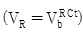
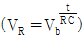
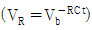
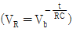
(정답률: 83%)
10. R-L 직렬회로의 과도응답에서 감쇠율은?
- R/L
- L/R
- R
- L
(정답률: 80%)
11. 8진 PSK의 오류확률은 2진 PSK 오류 확률의 몇 배인가?
- 2배
- 3배
- 4배
- 5배
(정답률: 84%)
12. 다음 회로의 명칭으로 가장 적합한 것은?
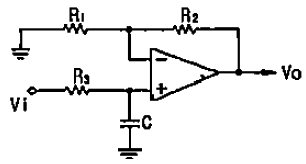
- 저역통과 여파기
- 고역통과 여파기
- DC-AC 변환기
- 슈미트 트리거
(정답률: 54%)
13. BJT에 대한 FET의 특징이 아닌 것은?
- 열에 대하여 동작이 안정하다.
- 입력저항이 작다.
- 게이트전압으로 드레인전류를 제어한다.
- 잡음이 적다.
(정답률: 87%)
14. 논리식
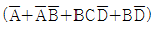
를 간략화하면?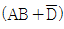
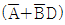
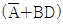
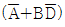
(정답률: 77%)
15. 이미터플로워(Emitter-follower) 회로으 VCE의 전압은?
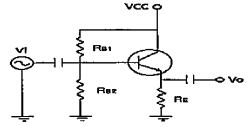
- 6.8V
- 7.5V
- 8.2V
- 12.4V
(정답률: 28%)
16. B급 푸시풀(push-pull) 증폭기의 설명으로 맞는 것은?
- 최대효율은 78.5%이다.
- 컬렉터 효율이 A급보다 낮다.
- Cross-over 일그러짐이 제거된다.
- 공급 전원을 흐르는 전류의 변동 폭이 매우 작다.
(정답률: 70%)
17. 그림과 같이 평활회로를 가진 반파 정류회로에서 다이오드에 걸리는 최대 역전압[V]은? (단, Vt=Vmsinwt[V])
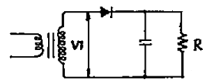
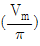
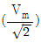
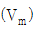
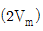
(정답률: 58%)
18. 위상변조에서 변조지수 Bp=5, 변조 신호주파수 fm=4[kHz]일 때 최대 주파수 편이는?
- 5[kHz]
- 10[kHz]
- 145[kHz]
- 20[kHz]
(정답률: 84%)
19. 첫째 단의 잡음지수 F1=10, 이득 G1=20이며, 다음 단의 잡음 지수 F2=21, 이득 G2=50일 때 2단 증폭기의 종합 잡음지수는?
- 10
- 11
- 21
- 110
(정답률: 89%)
20. 펄스폭이 0.5[ms]이고 펄스의 주파수가 1[kHz]일 때 듀티사이클(duty cycle)은?
- 0.5%
- 5%
- 25%
- 50%
(정답률: 67%)
2과목: 회로이론 및 제어공학
21. 분포정수회로에서 선로의 특성 임피던스를 Z0, 전파정수를 Y라 할 때 선로의 병렬 어드미턴스[℧]는?
- Z0/Y
- Y/Z0
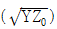
- YZ0
(정답률: 50%)
22. 회로에서 4단자 정수 A, B, C, D 의 값은?
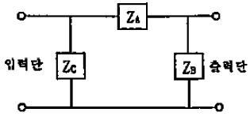
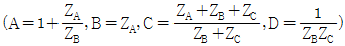
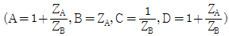
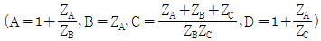
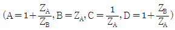
(정답률: 72%)
23. 3상 불평형 전압에서 역상전압이 25[V]이고, 정상전압이 100[V], 영상전압이 10[V]라 할 때 전압의 불평형률은?
- 0.10
- 0.25
- 0.35
- 0.45
(정답률: 74%)
24. 6상 성형 상전압이 100[V]일 때 선간전압은 몇 [V]인가?
- 200[V]
- 173[V]
- 141[V]
- 100[V]
(정답률: 62%)
25. 다음 함수의 역 라플라스 변환을 구하면?
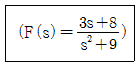
- 3cos3t-8/3sin3t
- 3sin3t+8/3cos3t
- 3cos3t+8/3sint
- 3cos3t+8/3sin3t
(정답률: 24%)
26. 비정현파를 구성하는 일반적인 성분이 아닌 것은?
- 기본파
- 고조파
- 직류분
- 삼각파
(정답률: 79%)
27. 9/4[kW] 직류 전동기 2대를 매일 5시간씩 30일 동안 할 때 사용한 전력량은 약 몇 [kWh]인가? (단, 전동기는 전부하로 운전되는 것으로 하고 효율은 80[%]이다.)
- 650[kWh]
- 745[kWh]
- 844[kWh]
- 980[kWh]
(정답률: 54%)
28. R=200[Ω], L=1.59[H], C=3.315[㎌]를 직렬로 연결한 회로에 e=141.4sin377t[V]의 전압을 인가할 때 C의 단자전압은 약 몇 [V]인가?
- 71[V]
- 212[V]
- 283[V]
- 401[V]
(정답률: 34%)
29. 다음과 같은 회로의 전달함수를 구하면?
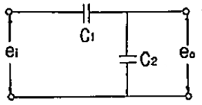
- C1+C2
- C2/C1
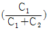
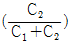
(정답률: 62%)
30. 회로에서 V(t)=120sin(100t+θ)[V]이다. t=0에서 스위치를 닫았을 때 전류의 파형에 과도현상이 나타나지 않게 하려면 θ의 값은 약 몇 도인가?
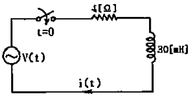
- 30.2°
- 36.9°
- 47.6°
- 53.1°
(정답률: 37%)
31. 제어계의 종합 전달함수 값이
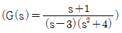
로 표시될 경우 안정성의 판정은?- 안정
- 불안정
- 임계상태
- 알 수 없음
(정답률: 42%)
32. 다음 중 DIAC(diode AC semi conductor switch)의 V-I 특성곡선은?
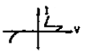
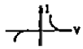
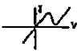
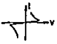
(정답률: 50%)
33. 전달함수
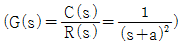
인 제어계의 임펄스응답 c(t)는?- e-ct
- 1-e-ct
- te-ct
- 1/2t2
(정답률: 54%)
34. 제어계의 특성방정식이 a0sn+a1sn-1+······+an-1s+an=0로 했을 때 이 방정식의 근이 전부 복소평면의 좌반 평면에 있고 제어계가 안정하기 위한 필요충분조건이 아닌 것은?
- 계수 a0a1···an가 모두 존재할 것
- 계수가 모두 동부호일 것
- 추비쯔의 행렬식이 전부 정(正)일 것
- 루스(Routh)의 행렬식이 전부 정(正)일 것
(정답률: 20%)
35. 그림과 같은 신호 흐름 선도의 전달함수 C(s)/R(s)는?
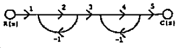
- 2
- 4
- 6
- 8
(정답률: 47%)
36. 단위 피드백제어계의 개루프 전달함수가
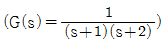
일 때 단위 계단입력에 대한 정상편차는?- 2/3
- 3/2
- 1/3
- 1/2
(정답률: 29%)
37. 계통방정식이
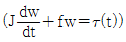
로 표시되는 시스템의 시정수는? (단, J는 관성 모멘트, f는 마찰 제동계수, ω는 각속도, τ는 회전력이다.)- J/f
- f/J
- -J/f
- f·J
(정답률: 46%)
38. 다음 함수를 z 변환하였을 때 옳지 않은 것은?
- σ(t)=1
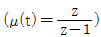
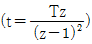
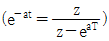
(정답률: 50%)
39. 지연요소(dead time element)는 제어계의 안정도에 어떤 영향을 미치는가?
- 안정도에 관계없다.
- 안정도에 개선한다.
- 안정도를 저하시킨다.
- 상대적 안전도의 척도역할을 한다.
(정답률: 24%)
40. 다음 시스템의 상태 천이 행렬을 구하면?
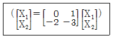
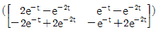
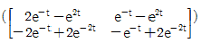
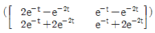
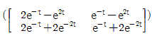
(정답률: 45%)
3과목: 신호기기
41. 유도 전동기의 토크-속도 곡선이 비례추이를 한다는 것은 그 곡선이 무엇에 비례해서 이동하는 것을 말하는가?
- 2차 합성저항
- 슬립
- 회전수
- 공급전압
(정답률: 75%)
42. 10[kW] 3상 200[V] 유도전동기를 효율 및 역률이 각각 85[%]가 되게 운전하고 있을 때 입력전류[A]는?
- 약 80[A]
- 약 60[A]
- 약 40[A]
- 약 20[A]
(정답률: 77%)
43. 전동차단기에서 전동기의 클러치 조정은 차단봉 교체시 시행하여야 하며 전동기의 슬립전류는 몇 [A]이하로 하여야 하는가?
- 5[A]
- 6[A]
- 7[A]
- 8[A]
(정답률: 93%)
44. 2중 농형 전동기가 보통 농형 전동기에 비해서 다른 점은?
- 기동 전류가 크고, 기동 토크도 크다.
- 기동 전류가 적고, 기동 토크도 적다.
- 기동 전류가 크고, 기동 토크가 적다.
- 기동 전류가 적고, 기동 토크는 크다.
(정답률: 67%)
45. 전기 선로전환기를 반위로 수동 취급한 다음 스위치를 넣으면 전기 선로전환기가 원위치로 전환되는 이유는?
- KR이 자기 유지하고 있으므로
- TR이 여자되어 있으므로
- 전동기 회로에 콘덴서가 있으므로
- 수동 취급한 전기 선로전환기와 제어계전기 위치(자기유지계전기)가 다르므로
(정답률: 84%)
46. 전력용 콘덴서의 보호에는 다음의 각 계전기 종류가 있다. 상호관계가 옳지 않은 것은?
- 과전압 계전기-전압상승
- 부족전압 계전기-정전 또는 전압강하
- 선택접지 계전기-지락사고
- 역상 계전기-단락사고
(정답률: 77%)
47. 전기 선로전환기의 동작순서 중 옳은 것은?
- 쇄정 → 해정 → 표시 → 전환
- 표시 → 전환 → 쇄정 → 해정
- 전환 → 해정 → 쇄정 → 표시
- 해정 → 전환 → 쇄정 → 표시
(정답률: 82%)
48. 선로전환기의 정위 또는 반위의 상태를 표시하는 목적으로 사용되는 계전기는?
- 유극선조계전기
- 무극선조계전기
- 자기유지계전기
- 완방계전기
(정답률: 37%)
49. ATS 지상자 제어계전기의 접점저항은 몇[mΩ] 이하이어야 하는가?
- 60[mΩ]
- 80[mΩ]
- 100[mΩ]
- 120[mΩ]
(정답률: 85%)
50. 변압기의 철심에는 히스테리시스 현상이 있으므로 변압기에 정현파 기전력이 유기되려면 그 여자전류의 파형은?
- 편평파가 된다.
- 첨두파가 된다.
- 파형(Hz)마다 다르다.
- 정현파가 된다.
(정답률: 86%)
51. 장대형 전동차단기 회로제어기의 정위 및 반위 접점을 100[mA]의 전류를 통하였을 때, 접점 단자의 전압강하는 몇 [mV] 이하여야 하는가?
- 1[mV]
- 3[mV]
- 5[mV]
- 7[mV]
(정답률: 72%)
52. 변압기의 리액턴스강하가 저항강하의 3배이고, 정격전류에서 전압변동률이 0 이 되는 앞선 역률의 크기 [%]는?
- 95[%]
- 93[%]
- 90[%]
- 87[%]
(정답률: 62%)
53. 단중 중권인 직류 분권전동기가 있다. 총도체수 100, 자극수 4, 1극의 자속 0.628[Wb]이고, 전지자에 5[A]의 전류가 흐를 때 토크[N·m]는?
- 약 75
- 약 50
- 약 25
- 12.5
(정답률: 58%)
54. 전동차단기는 건널목 제어거리에 따라 차단시간을 정하는 것으로 하되 건널목 경보기가 경보를 개시하고부터 몇 초 경과 후에 차단기가 하강하도록 설비하는가?
- 1초 이상
- 2초 이상
- 3초 이상
- 4초 이상
(정답률: 86%)
55. 반파 정류회로에서 직류전압 100[V]를 얻는데 필요한 변압기 2차 상전압은 약 몇 [V]인가? (단, 부하는 순저항 부하이며, 변압기 내의 전압강하는 무시하고, 정류기 내의 전압강하는 15[V]로 한다.)
- 125[V]
- 256[V]
- 315[V]
- 496[V]
(정답률: 67%)
56. 다음 중 전기 선로전환기의 공회전 조건이 아닌 것은?
- 첨단에 이물질이 끼었을 때
- 콘덴서가 단락되었을 때
- 첨단간의 취부위치가 틀릴 때
- 쇄정간 홈과 쇄정자가 불일치 되었을 때
(정답률: 91%)
57. 건널목 전동차단기의 제어전압은 정격값의 몇 배로 유지하여야 하는가?
- 0.8 ~ 1.0 배
- 0.8 ~ 1.3 배
- 1.0 ~ 1.3 배
- 0.9 ~ 1.2 배
(정답률: 88%)
58. 직류계전기로서 여자전류의 극성에 따라서 +, - 무전류의 3위식으로 동작하는 계전기는?
- 무극계전기
- 유극계전기
- 1원형계전기
- 2원형계전기
(정답률: 71%)
59. 임피던스 전압을 걸 때의 입력은?
- 임피던스 와트
- 철손
- 정격용량
- 전부하시의 전손실
(정답률: 82%)
60. 직류직권 전동기의 토크 특성 곡선은?
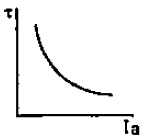
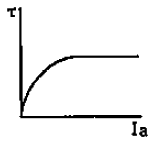
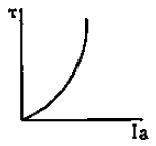
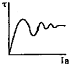
(정답률: 72%)
4과목: 신호공학
61. 열차 최고속도가 80km/h인 구간의 건널목 경보제어거리는 약 몇 m 인가? (단, 건널목 경보시간은 30초로 한다.)
- 587
- 627
- 667
- 707
(정답률: 93%)
62. 지상에 설치된 상치신호기 확인거리 확보를 600[m] 이상 하여야 하는 신호기는?
- 원방신호기
- 중계신호기
- 엄호신호기
- 유도신호기
(정답률: 72%)
63. 5현시용 ATS장치의 열차 최고응동속도는? (단, 직선부의 최대속도이며, BPM보드의 검지주파수 검지시간은 9.6[ms]이고 지상자 응동 최소거리는 400[mm]이다.)
- 약 140[km/h]
- 약 150[km/h]
- 약 160[km/h]
- 약 170[km/h]
(정답률: 56%)
64. NS형 전기선로전환기의 밀착도는 기본레일이 움직이지 않는 상태에서 1[mm]를 벌리는데 정위, 반위 균등하게 몇 [kg]을 기준으로 하는가?
- 100
- 200
- 300
- 400
(정답률: 93%)
65. 경부고속철도 레일온도검지장치(RTCP)의 온도별 운전취급 방법으로 거리가 먼 것은?
- 레일온도가 64℃ 이상일 때 : 운행중지
- 레일온도가 60℃ 이상 64℃ 미만일 때 : 70km/h 이하 운전
- 레일온도가 55℃ 이상 60℃ 미만일 때 : 230km/h 이하 운전
- 레일온도가 50℃ 이상 55℃ 미만일 때 : 270km/h 이하운전
(정답률: 75%)
66. 다음 중 신호기의 정위가 다른 것은?
- 유도신호기
- 입환신호기
- 엄호신호기
- 출발신호기
(정답률: 65%)
67. 역과 역 사이에 있어서 ATC신호의 운행관리 지시에 따라 지정된 속도로 열차가 주행하는 제어는?
- 타력운행제어
- 정속도 운행제어
- 정위치 정지제어
- 출입문 개폐제어
(정답률: 86%)
68. 열차가 상시 진행신호를 확인하면서 운전할 수 있도록 운행하는 간격은?
- 운전간격
- 최소운전간격
- 운전시격
- 최소운전시격
(정답률: 75%)
69. 열차자동방호장치(ATP)에서 연속적으로 두 개의 정보전송장치를 설치하고자 할 때 최소이격 거리는?
- 2[m]
- 3[m]
- 5[m]
- 7[m]
(정답률: 62%)
70. 신호용 정류기의 효율시험 시 입력전압을 규정값으로 유지하고 출력측을 조정하여 출력전압과 전류를 정격값으로 놓았을 때 효율[%]의 산출식은?
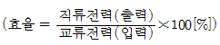
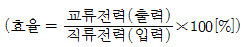
(정답률: 93%)
71. 철도신호에서 사용하는 하드웨어 결함허용기법으로 거리가 먼 것은?
- Triple Module Redundancy
- Duplication with Comparison
- Watch-dog timer
- Check pointing
(정답률: 71%)
72. 진행 또는 주의 신호를 현시하기 위한 신호제어회로의 조건으로 거리가 먼 것은?
- 진로쇄정 완료의 조건
- 진로 취급버튼을 반위로 조작할 수 있는 조건
- 진로상의 선로전환기 쇄정완료 조건
- 사구간의 절연매립전 설치 및 보안회로의 조건
(정답률: 67%)
73. ATS 지상자의 설치에 대한 설명으로 거리가 먼 것은?
- 지상자만을 설치할 경우에는 리드선이 붙은 상태로 단락되지 않도록 처리한다.
- 점제어식 지상자의 설치거리는 신호기 바깥쪽으로 부터 열차 제동거리의 1.2배 범위로 한다
- 지상자 밑면과 자갈과의 간격은 20mm 이상으로 한다.
- 가드레일과의 간격은 400mm 이상으로 한다.
(정답률: 95%)
74. 다음 중 대용폐색방식에 해당하지 않는 것은?
- 통신식
- 지도 통신식
- 지도식
- 지도 격시법
(정답률: 75%)
75. 다음 중 MJ81형 선로전환기에 대한 설명으로 거리가 먼 것은?
- 휘어지거나 손상된 핑거의 재사용은 금한다.
- 텅레일의 밀착 시에 접점조정게이지의 6mm 부분은 핑거에 삽입되고 7mm 부분은 삽입되지 않아야 한다.
- 접점이 구성되는 순간에 C헤드와 쇄정장치의 겹치지 않는 부분은 13 ~ 26mm 이어야 한다.
- 쇄정장치를 설치할 때에는 텅레일의 신축을 감안하여야 하며 20℃를 기준으로 했을 때 취부볼트가 이동여유공간의 좌측에 위치하여야 한다.
(정답률: 54%)
76. 어느 역간 열차평균 운전시분이 5분이고 폐색취급 시분이 3분일 경우 선로 이용률이 80[%]인 단선구간의 선로 용량은?
- 104회
- 124회
- 144회
- 164회
(정답률: 94%)
77. 건널목 전동차단기에 대한 설명으로 거리가 먼 것은?
- 제어 전압은 정격값의 0.9 ~ 1.2배로 설정한다.
- 궤도 중심에서 차단간까지 3.9[m]가 되도록 설치한다.
- 가공전선등과 차단봉간의 이격거리는 교류귀전선(교류전차선로 가압부분을 포함)의 경우 2[m] 이상으로한다.
- 전동차단기는 열차가 건널목을 통과하는 즉시 차단봉이 상승하도록 한다.
(정답률: 75%)
78. 교류 궤도회로의 단락감도 향상을 위한 방법으로 거리거 먼 것은?
- 레일을 용접, 장대 레일화 하여 전압강하를 없앤다.
- 송전전압을 증가하고, 한류장치의 저항 또는 리액터를 증가한다.
- 궤도계전기에 병렬로 저항을 삽입하고, 반위접점으로 단락한다.
- 위상을 적당히 하여 열차 단락시의 회전 역률을 최대 회전역률에서 이동시킨다.
(정답률: 75%)
79. 경부고속선 선로변기능모듈(TFM)에 대한 설명으로 맞는 것은?
- 선로전환기, 진입허용표시등, 쇄정해제스위치 등 현장 설비를 직접 제어
- CTC와 LCP의 제어 명령을 연동장치와 ATC 등에 전송하고 현장설비 표시 정보를 CTC와 LCP로 전송
- 연동장치를 전자식으로 모듈화
- 관할구역 내의 현장설비를 제어하고 설비의 상태 및 열차의 운행상태 파악
(정답률: 37%)
80. 경부고속철도 열차제어를 위하여 CTC 및 LCP에서 취급된 제어명령을 SSI를 통해 현장으로 전송하고 제어 확인된 표시정보를 수신하여 CTC나 LCP로 전송하는 기능을 수행하는 기기는?
- TFM
- TVM
- CAMZ
- FEPOL
(정답률: 84%)
이미터 접지 증폭기는 입력 신호와 출력 신호가 서로 반대 위상을 가지기 때문에 180도 위상차가 있다고 말할 수 있습니다. 이는 증폭기의 작동 원리 중 하나인 "공명 회로"에 기인합니다. 이 회로는 입력 신호와 출력 신호가 서로 반대 위상을 가지도록 설계되어 있습니다. 따라서 입력 전압이 증폭되면 출력 전압은 입력 전압의 반대 방향으로 증폭됩니다. 이러한 작동 원리 때문에 이미터 접지 증폭기는 반송파 억제 기능을 가지고 있으며, 높은 증폭도와 안정적인 작동을 보장합니다.